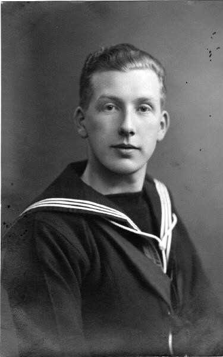
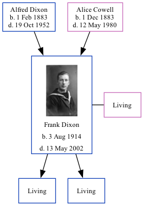

Frank Ernest Dixon 1914 - 2002
[ Home ] | [ Calendar ] | [ Surnames Index ] | [ Family History ]A rating & accountancy's assistant and the 2nd of 3 children of Alfred Dixon (an iron molder) and Alice Cowell, Frank Dixon, the fourth cousin once-removed on the mother's side of Nigel Horne, was born in Medway, Kent, England on Aug 3, 19141,2,3, was baptized in Rochester, Kent, England on Oct 21, 1914. He married Irene Pollard (with whom he had 2 surviving children Christopher M and Peter D) in Chatham, Kent, England around May 19454. On Sep 29, 1939, he lived on 112 Cecil Road in Rochester1.
He died on May 13, 2002 in Maidstone, Kent2.
Parents
- Alfred was born on Feb 1, 1883
- Alice Sarah was born on Dec 1, 1883
Citations
- 1939 Register - Findmypast (was the son of the head of the household)
- England & Wales deaths 1837-2007 - Findmypast
- Kent Baptisms - Findmypast
- England & Wales Marriages 1837-2005 - Findmypast
Media
Frank Dixon

England & Wales births 1837-2006 - BMD/B/1914/3/AZ/000411/086
England & Wales deaths 1837-2007 - BMD/D/2002/6/84880307
1939 Register Transcription - TNA-R39-1772-1772J-023-41
1939 Register Transcription - TNA-R39-1772-1772J-023-40
England & Wales marriages 1837-2005 - BMD/M/1945/2/AZ/000369/063
Kent Baptisms - PRS/MEDWAY/BAP/0412799
Family Tree
Generated by Ged2Site. Last updated on Jul 20, 2025